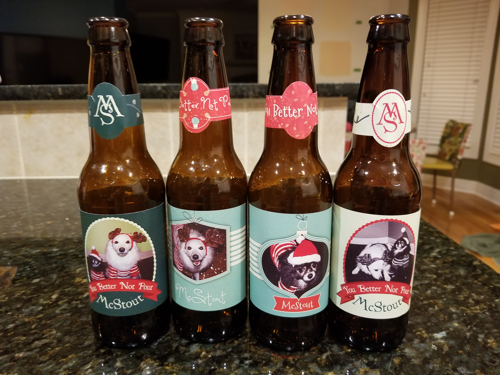

My very first brew. This was done as a class at the Overland Park Brewlab. My wife gifted the lesson to me as our first anniversary present, and I was hooked pretty quick.
Since we brewed this in November we decided to go for a holiday beer (I’m a big fan of Christmas ales). We opted to brew 10 gallons (it was the holidays after all). Definitely over estimated how much beer I’d give away, and I ended up with beer in my basement and fridge through early/mid summer.
Sine the Brew Lab has all the equipment needed for just about any brew we were able to do an all grain recipe. The recipe we opted for was Ben VanderMeer’s Better Not Pout Stout. Of course, the recipe wasn’t quite the same, and my wife and I brewed it, so we went ahead and just renamed it Better Not Pout McStout for good measure.
Unfortunately, I don’t have the exact ingredient list of what ended up in the wort that day, but the list should be pretty close to the linked recipe above. The main differences that I can recall in our brew were:
- No addition of brewing salts
- Honey was reduced by half (just because there wasn’t enough in stock at the time).
The ABV was well under the projected from VanderMeer’s recipe since the fermentables were reduced significantly, and it came in near the low 4s IIRC.
Once bottled my wife, Melanie, designed some labels featuring our pups and we started giving away (and hoarding) beer.

IMO, the beer turned out great. Turned out a little sweet like holiday cheer, but not overpowering. The spices came through nicely and was great just to stick under your nose. The only thing I would change for next time would be getting the rest of the fermentables into the wort.
Learned a few things from this brew, most in retrospect. First, note taking is critical. In my own home I’ve been way more thorough with notes (hopefully that comes through in the later posts), but in the lab with someone holding my hand I didn’t even know what I should be taking notes about. Second, all grain isn’t as crazy as it sounds. This brew took a while, but I don’t remember it being overly difficult (however, there was a lot of hand holding). Currently at home I brew extract and even though I don’t remember too much about the all grain process I’m confident it won’t be much harder to pick up than extract. My advice to other new home brewers: try it!
Finally, for the main take away from this class was just that brewing is great. I’d recommend that everyone try it, it’s very satisfying making your own beer. After this class Melanie bought me a 5 gallon kit to brew at home, and my only regret is not opening the box sooner.